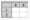

Lecteurs en cours
Ce menu vous permet de visualiser les lecteurs qui ont un abonnement encore valable.
Vous pouvez :
modifier le nombre de résultats affichés par page.
filtrer par
localisation(si la multi-localisation est activée) et parstatut de lecteurtrier par Nom et prénom, code-barres de lecteurs, ville et date d'expiration de l'abonnement.
Cliquer sur Actualiser pour appliquer les changements.
Vous pouvez exporter vers un tableur type Excel ou OpenOffice ou vers un tableur au format HTML .
Ajouter à un panier de lecteurs⚓
Pour utiliser ce bouton, les paniers de l'onglet Circulation doivent être activés.
Pour ajouter dans un panier de lecteurs toute la liste des lecteurs, vous pouvez cliquer sur Ajouter dans un panier.
Pour plus d'informations, voir le Guide de l'administrateur PMB.
Changer le statut de lecteurs⚓
Vous pouvez changer le statut des lecteurs de la liste :
Sélectionnez le nouveau statut que vous souhaitez voir appliquer,
Cliquez sur le bouton
Appliquerpour effectuer les changements.
Vous pouvez cliquer sur un des lecteurs dans les résultats de la
recherche pour afficher sa fiche dans l'onglet
Circulation.